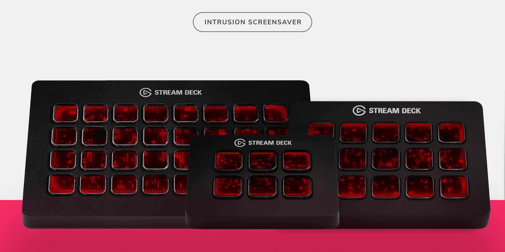
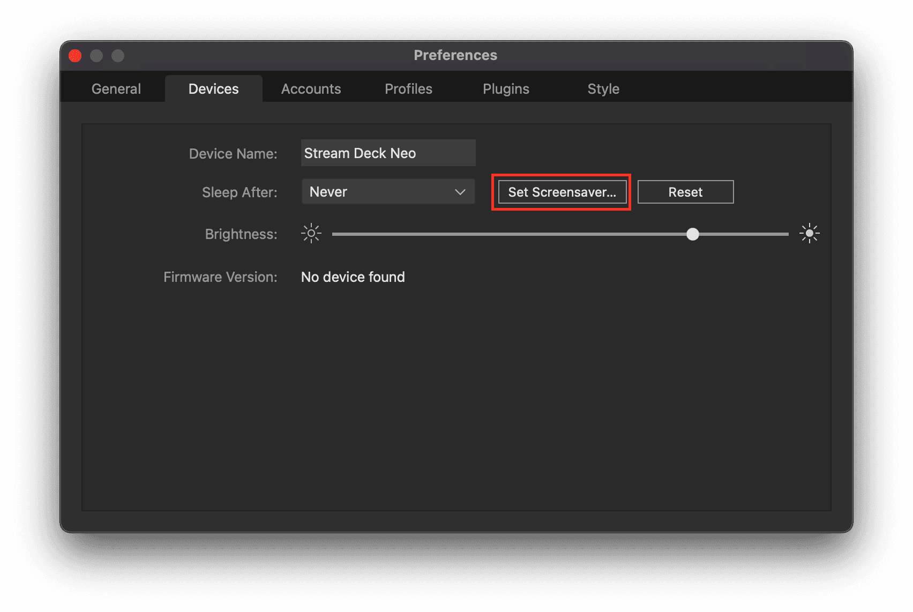
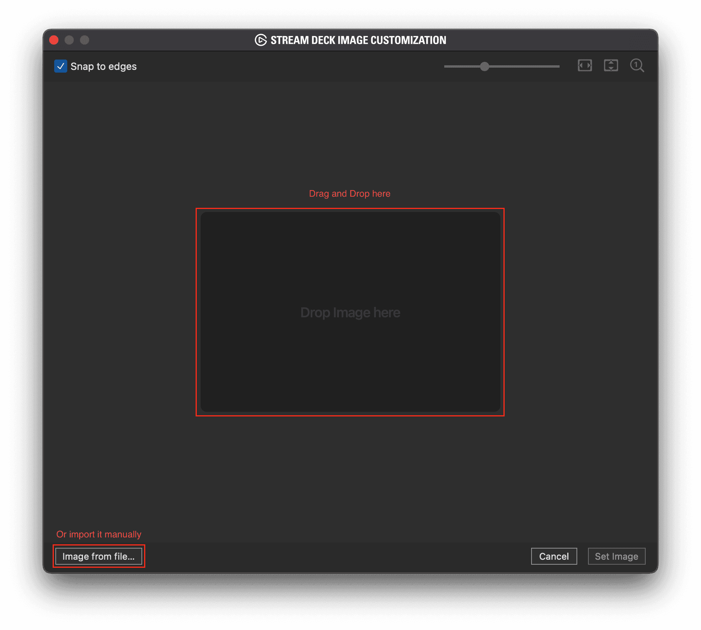
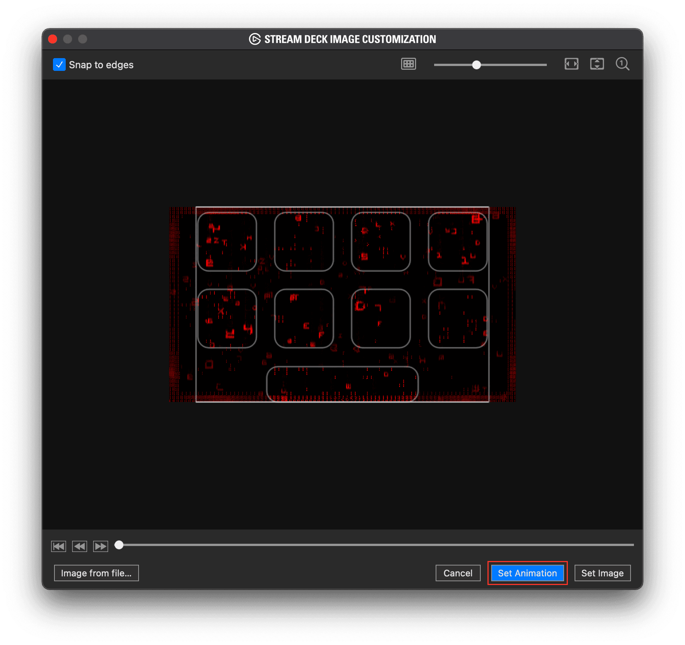
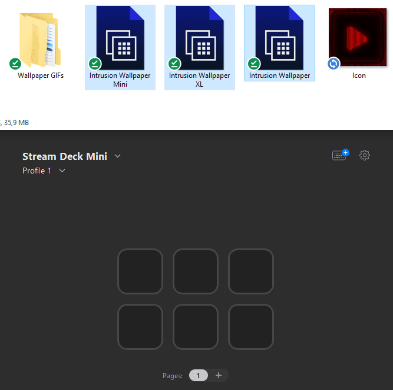

{kind=link}

After downloading a screensaver from the Elgato Marketplace, setting it up is simple with one easy-to-follow method. However, if you're using a version of the Stream Deck software older than 6.6, you'll need to refer to the legacy method outlined below the GIF setup method.
GIF Setup Method
If you’re using the latest version of the Stream Deck software (6.6 or above), the easiest way to set up your new screensaver is with the built-in feature in the Settings tab.
To get started, open the Settings tab. Then, go to the Devices tab and click the ‘Set Screensaver’ button.
{kind=link}

An Image Customization window will pop up. From here, you can either drag and drop the .GIF file from your download or manually import it by clicking the 'Image from file' button at the bottom.
{kind=link}

All that's left is to click the 'Set Animation' button. If you'd prefer a static frame from the animation as your screensaver, just click the 'Set Image' button instead
{kind=link}

That’s it! Now, whenever your Stream Deck enters Sleep Mode, your new screensaver will appear.
Legacy Method (Profiles)
If you’re using an older version of the Stream Deck software, you’ll need to rely on the included profiles and switch to one of them whenever you want the screensaver to appear. Simply navigate to one of the profiles in your file explorer, open it, and you’re all set!
{kind=link}

Manual Setup Method
If you’d prefer to import this profile manually, just follow these steps:
1. Open the settings in your Stream Deck app.
2. Go to the Profiles tab and click the small dropdown arrow.
3. Select ‘Import’ from the menu.
4. Locate the screensaver folder you downloaded and choose the profile that matches your Stream Deck type.
Changing Profile Destination with Key Press
These keys are set up to switch your Stream Deck to the next profile in the list when pressed. If you’d like to assign a specific profile that you’ve already created, follow these simple steps:
1. Click on the icon you want to modify
2. From the ‘Profile’ dropdown menu, select the profile you want to assign.
That’s it! Your key is now configured to switch to your chosen profile.